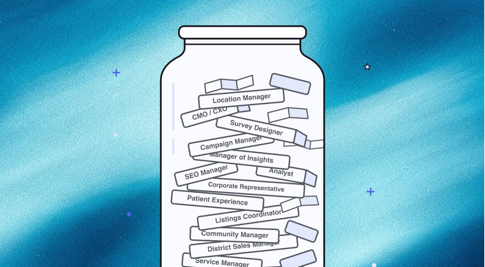
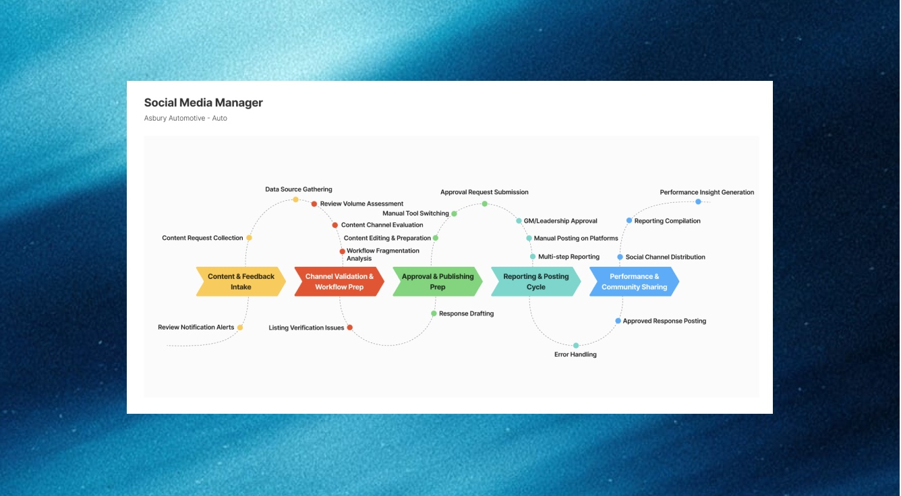
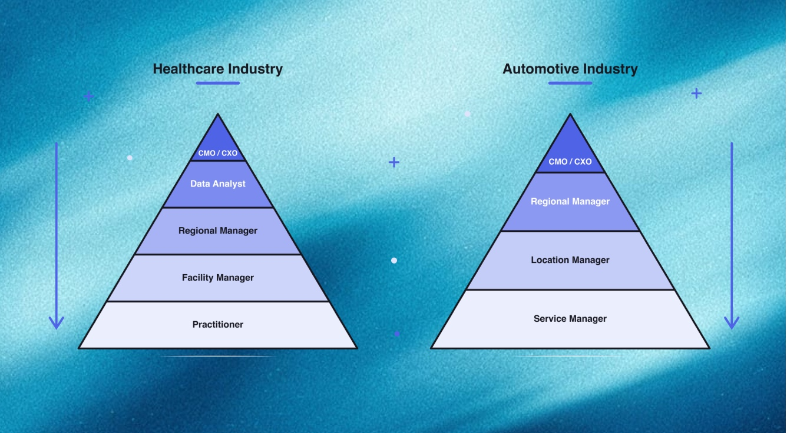
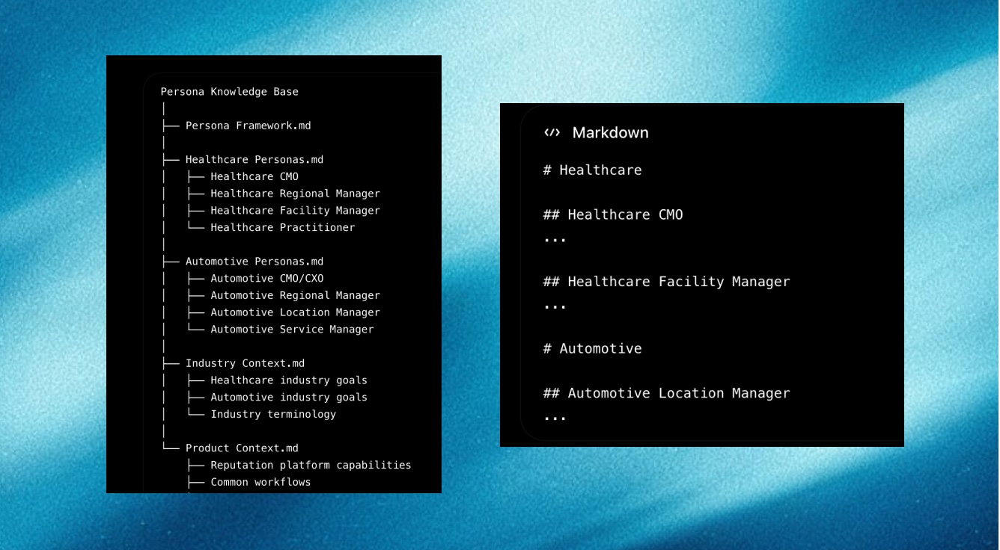
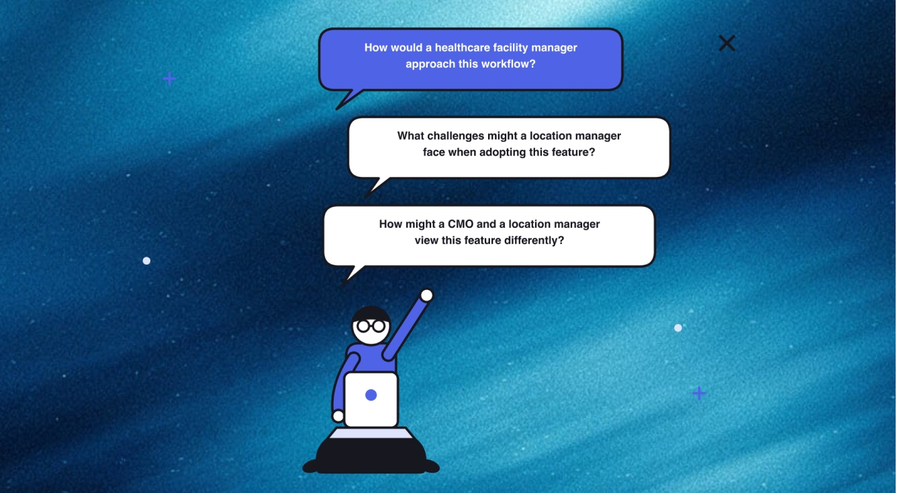
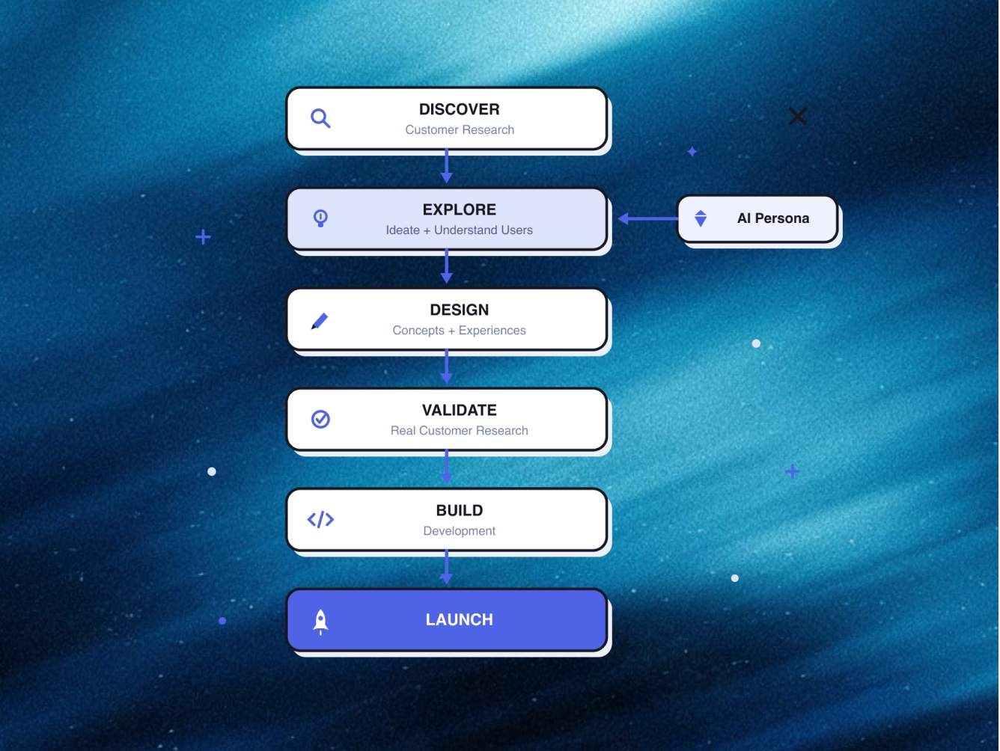
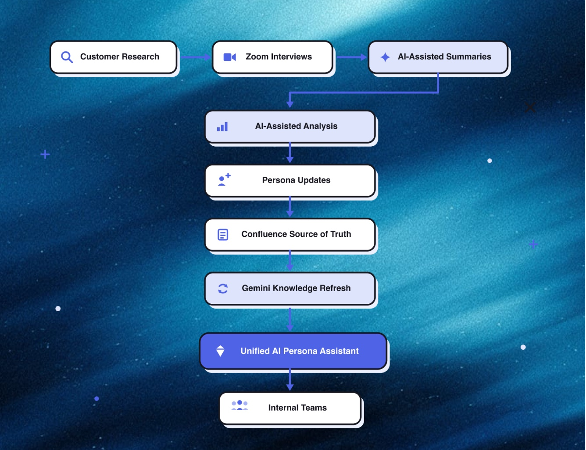
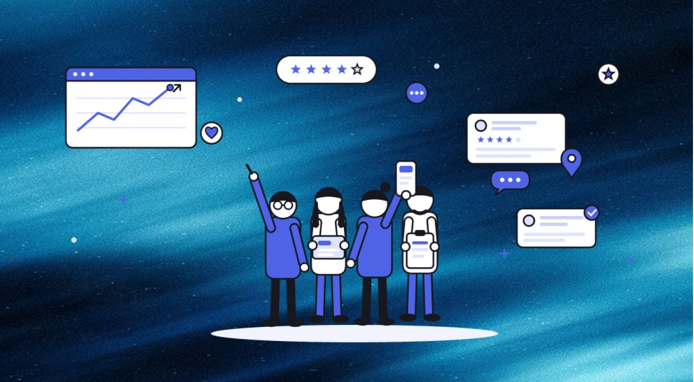
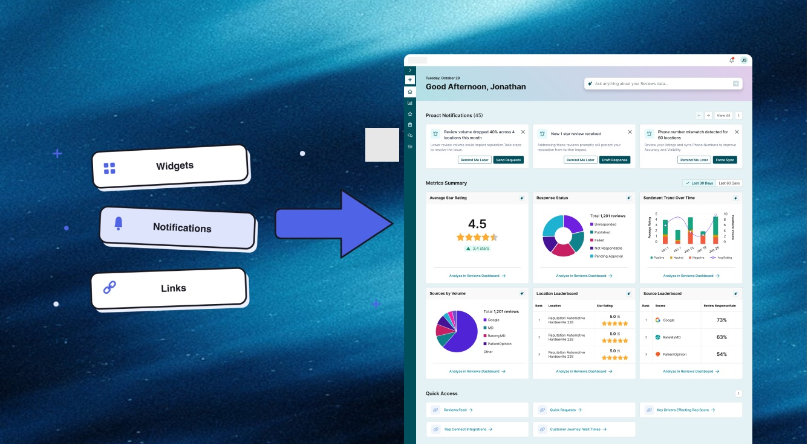

AI Personas
AI-powered knowledge base tool enabling teams to get persona information quicker and ideate solutions faster with confidence.
Overview
Timeline
2025-Present
Team
Led by me in partnership with the Director of UX, with support from the Product, Engineering, and Customer Success teams.
Tools
Gemini, Gemini Gems, Confluence
Summary
As Reputation accelerated its shift toward an AI-powered organization, teams struggled to consistently access and apply customer research, industry knowledge, and user insights in their day-to-day work. Information was scattered, personas required ongoing maintenance, and teams often relied on assumptions before validating with customers. It was a broken and messy process.
I led the design of an internal AI Persona Framework using Gemini Gems, turning organizational knowledge and user personas into a reusable AI knowledge base tool. Teams could quickly interact with these personas to better understand users, explore ideas, identify potential considerations, and make more informed decisions before deeper customer validation.
The project expanded my role beyond designing interfaces into designing how teams use AI, knowledge, and customer insights at scale.
Challenge
Reputation serves diverse industries with unique personas and workflows, but persona knowledge was fragmented across teams, inconsistently maintained, and difficult to access during product decisions.
As personas became outdated, teams lacked a reliable source of truth and spent time independently rediscovering customer context, validating assumptions, and repeating research—reducing confidence in connecting product decisions to customer needs.
Goals
→ Gather up all existing documentation on Personas across departments.
→ Spearhead new research to ensure that information from existing documentation is up to date.
→ Create a single source of truth for all persona information across the organization.
→ Create a unified AI-powered persona assistant with Gemini Gem to enable faster information, explore ideas and validate assumptions earlier with greater confidence.
→ Increase AI Gem adoption across the organization so that everyone is aligned on personas, workflows, and user goals.
→ Develop a system to maintain and update persona information.
Research and Discovery

Reputation Users
Reputation serves diverse industries, from Healthcare and Automotive to Retail and Financial Services, with users ranging from executive leaders to operational roles across each organization.
Research Approach
Our organization had fragmented and outdated persona documentation across Product, Marketing, and Design. We first focused on creating a single source of truth by consolidating existing knowledge and updating it through new customer research.
We partnered with Customer Success to interview internal experts and coordinate user interviews focused on:
- Customer journeys and workflows
- Key responsibilities and deliverables
- Industry-specific goals and success metrics
- Pain points, motivations, and challenges

Following interviews, we used AI to analyze Zoom transcripts, extract key insights, and identify customer journey patterns, then documented and centralized the findings in Confluence as the shared source of truth.
Journey maps were highly linear, showing step-by-step workflows without capturing the broader context, decision points, and variations in how customers worked.
Building the AI
Framework
Hierarchy for Personas
We designed an AI persona framework that organized users by industry, business hierarchy, and role, reflecting real-world relationships, workflows, and decision-making. Each persona combined industry knowledge, responsibilities, goals, challenges, motivations, and product needs to provide richer context for the AI.
This structure also helped teams understand individual user needs and how personas influence one another across the customer journey—from purchase decisions to daily product use to interactions.

Feeding the Data
We consolidated Confluence research into a standardized persona framework before integrating it into Gemini Gems. Each persona captured role, responsibilities, goals, workflows, pain points, motivations, decision criteria, KPIs, and product usage.
The Gem used two layers of knowledge:
- Ecosystem file: A high-level tree mapping industries, companies, roles, and business hierarchy, along with broader industry and Reputation product knowledge.
- Persona files: Separate, detailed files for each persona containing their specific role, responsibilities, goals, workflows, pain points, motivations, KPIs, and product needs.

Confluence became the source of truth, while Gemini Gems served as the interactive AI layer, combining broad ecosystem context with detailed persona knowledge.
The AI Gem

By combining Confluence knowledge and industry context in Gemini Gems, we created an interactive AI layer for accessing and exploring customer perspectives.
The system enabled teams to:
→ Quickly explore ideas and potential customer concerns
→ Form hypotheses and questions before deeper user validation
→ Understand personas, workflows, and goals
→ Accelerate onboarding and reduce redundant research
→ Maintain a centralized source of truth for persona knowledge
The AI didn't replace customer research—it helped teams ask better questions before going into research.
The New Product Development Process

How it’s Maintained
Because customer needs, workflows, and products evolve, we established a structured process for keeping personas current. Confluence remained the source of truth, with the UX/Design team responsible for maintaining knowledge quality and incorporating new research throughout the year.
Ongoing updates + annual reviews kept personas relevant and turned them from static research artifacts into a living, continuously evolving customer knowledge system.

Retrospective

The AI persona system created a shared source of customer context across Reputation, helping teams quickly understand users, explore ideas, and make informed decisions before deeper customer research. The project reinforced that AI is only as effective as the knowledge behind it, requiring ongoing governance and maintenance. Ultimately, AI personas enhanced—not replaced—customer research, helping teams identify better questions, risks, and design opportunities faster.
Impact
→ Faster customer context across industries, roles, and workflows
→ Faster, more grounded ideation through different customer perspectives
→ Greater consistency with a shared source of truth
→ Reduced repetitive research by providing context before validation
→ Expanded AI adoption through a practical, reusable workflow
Already Making a Difference
As one of the first design projects using this new framework, the team is exploring how to make homepage onboarding and personalization faster and more accurate. By using a user’s role identified within the platform, we can determine the most relevant data, widgets, and content to surface on their homepage.

Future Opportunities
The next evolution would move the system from customer knowledge retrieval to proactive design intelligence. AI personas could evaluate concepts and designs from different customer perspectives, challenge assumptions, surface usability concerns, and flag potential conflicts with user needs before validation.
This could be supported by structured response frameworks and prompt instructions that guide the AI to respond consistently—for example, identifying a persona’s goal, concern, potential impact, and validation question for each concept. A human-in-the-loop system could then allow teams to correct responses, flag missing context, and approve insights for incorporation into the knowledge base.
Ultimately, this could evolve the system into a continuously improving customer intelligence layer that helps teams reason through design tradeoffs, identify risks, and prepare stronger questions for real customer research.